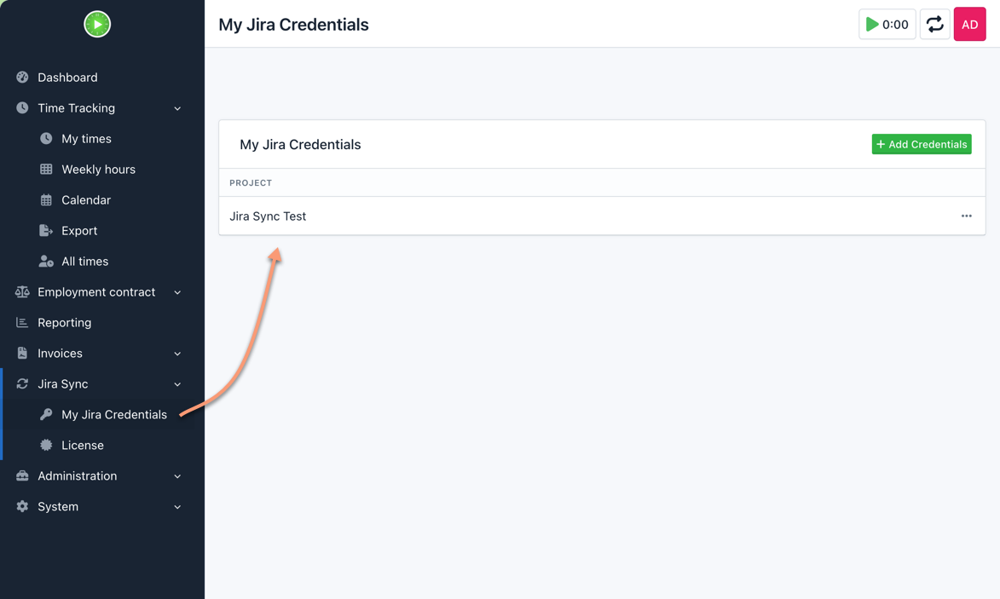
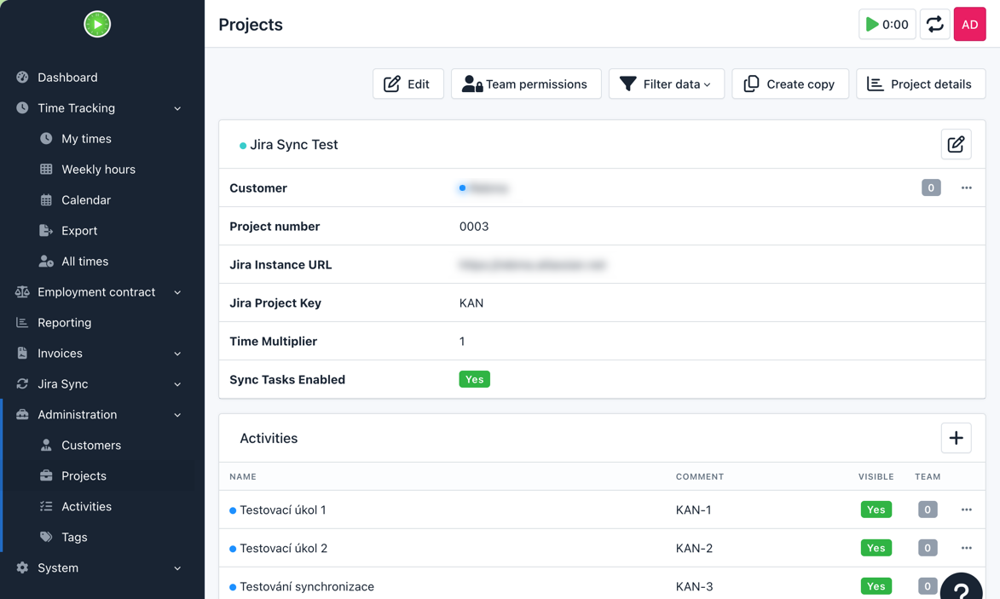

⚡
Automatic sync
Create, update, or delete a Kimai timesheet and mirror the result into Jira worklogs automatically.
Turn Kimai into a clean front-end for Jira worklogs. Sync created, updated, and deleted time entries, import Jira tasks as activities, and keep every project aligned with less admin overhead.
Uses the latest public GitHub release and resolves the newest ZIP asset automatically when available.
Use an activity meta field or a simple prefix like PROJECT-123.
No copy-paste. No missed entries. Your reporting stays consistent for the whole team.
Why teams use it
Kimai stays comfortable for the people logging time. Jira stays accurate for the people running projects.
Create, update, or delete a Kimai timesheet and mirror the result into Jira worklogs automatically.
Pull open Jira issues into Kimai as activities so teams track against the right work items.
Store Jira API tokens per user and project with AES-256 encryption and a clean admin workflow.
Use a time multiplier where project reporting needs adjusted durations for invoicing or internal rules.
Screenshot

Each user can manage credentials for the projects they work on, keeping the setup practical for real teams and multi-project environments.
Screenshot

Configure the Jira instance, project key, sync options, and imported tasks directly from the Kimai project screen—without touching config files.
Quick start
bin/console kimai:bundle:kimaijirasync:install
Ready to use
Download the newest public build, or go straight to the commercial checkout and deploy it for your team.